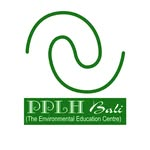
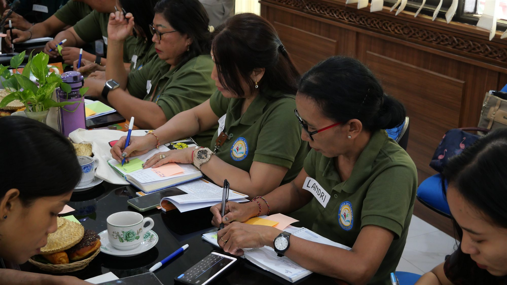

Salah satu langkah nyata yang dilakukan adalah menjalin kerja sama dengan Pusat Pendidikan Lingkungan Hidup (PPLH) Bali melalui Program Sekolah Ekologis periode 2026–2027.
SD Negeri 3 Kesiman menjadi salah satu sekolah peserta Program Sekolah Ekologis 2026–2027. Program ini dikembangkan oleh PPLH Bali bersama Aliansi Zero Waste Indonesia sebagai upaya membangun ekosistem sekolah yang sehat, aman, berkelanjutan, serta mendukung pemenuhan hak ekologis anak.
Kerja sama ini menjadi kesempatan bagi SD Negeri 3 Kesiman untuk memperkuat pendidikan lingkungan di sekolah. Program Sekolah Ekologis tidak hanya berfokus pada pengetahuan mengenai lingkungan, tetapi juga mendorong sekolah untuk menghadirkan berbagai praktik nyata yang dapat menjadi bagian dari pembelajaran dan budaya sekolah.

Mitra programPusat Pendidikan Lingkungan Hidup Bali
Diawali dengan Kick-Off dan Training of Trainers
Sebagai langkah awal pelaksanaan Program Sekolah Ekologis 2026–2027, PPLH Bali menyelenggarakan kegiatan Kick-Off dan Training of Trainers (ToT) Penggunaan Modul Sekolah Ekologis pada 31 Juli–1 Agustus 2026 di Dinas Kehutanan dan Lingkungan Hidup Provinsi Bali, Denpasar.
Kegiatan ini bertujuan membangun pemahaman bersama mengenai Program Sekolah Ekologis, mekanisme pelaksanaan, penggunaan modul, serta peran dan komitmen masing-masing sekolah dalam mengimplementasikan program.

Melalui kegiatan tersebut, sekolah memperoleh penguatan mengenai empat tema utama dalam Modul Sekolah Ekologis, yaitu pengelolaan sampah, keanekaragaman hayati, energi terbarukan, dan pangan sehat.
Selain mempelajari berbagai materi lingkungan, peserta juga melakukan pemetaan kondisi awal sekolah, berbagi praktik baik, menyusun rencana implementasi, serta merancang bagaimana kegiatan lingkungan dapat diintegrasikan ke dalam pembelajaran dan ekosistem sekolah.
Dari Pengetahuan Menuju Aksi Nyata
Melalui kerja sama dengan PPLH Bali, SD Negeri 3 Kesiman berupaya menjadikan pendidikan lingkungan sebagai bagian dari kehidupan sehari-hari di sekolah.
Peserta didik diharapkan tidak hanya memahami pentingnya menjaga lingkungan melalui materi pembelajaran, tetapi juga memperoleh kesempatan untuk terlibat dalam berbagai kegiatan nyata. Kebiasaan menjaga kebersihan, mengelola sampah dengan baik, merawat lingkungan, mengenal keanekaragaman hayati, menggunakan sumber daya secara bijak, serta membangun kebiasaan memilih pangan sehat menjadi bagian penting dalam membentuk kepedulian terhadap lingkungan sejak dini.
Program Sekolah Ekologis juga mendorong keterlibatan berbagai unsur sekolah. Guru, peserta didik, serta pemangku kepentingan lainnya dapat berkolaborasi untuk menciptakan lingkungan belajar yang lebih sehat dan berkelanjutan.
“Pendidikan lingkungan tumbuh melalui pembelajaran bersama, kebiasaan baik, dan aksi nyata seluruh warga sekolah.”
Bersama Menumbuhkan Generasi Peduli Lingkungan
Kerja sama antara SD Negeri 3 Kesiman dan PPLH Bali menjadi salah satu langkah dalam membangun budaya sekolah yang semakin peduli terhadap lingkungan.
Melalui pendampingan, pembelajaran bersama, serta penerapan berbagai kegiatan nyata, sekolah berharap nilai-nilai kepedulian terhadap lingkungan dapat tumbuh menjadi kebiasaan yang dilakukan secara konsisten oleh seluruh warga sekolah.
Lebih dari sekadar sebuah program, Sekolah Ekologis menjadi bagian dari proses pendidikan untuk membentuk generasi yang memiliki pengetahuan, kepedulian, dan tanggung jawab terhadap lingkungan di sekitarnya.